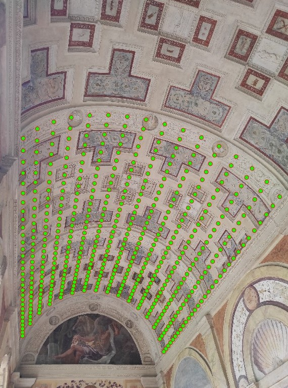
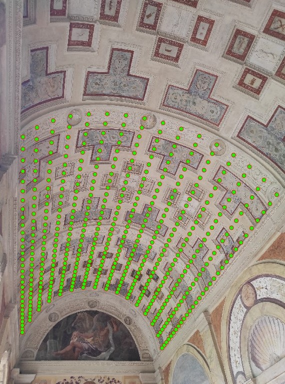

Max iterations
Iterazioni massime
Palette
Tavolozza
Close settings to zoom
Chiudere le impostazioni
per zoomare
OII National Italian Olympiads
OII Olimpiadi Italiane di Informatica
Path of Excellence - PoliMi
Percorso di eccellenza - PoliMi
OII (Olimpiadi Italiane di Informatica) are a national IT contest for students of the third and fourth year of high school. The goal of this competition is to popularize programming oriented to solve optimization problems involving time and memory constraints. To compete knowledge of algorithms, data structures, memory and complexity is required, but it's equally important to possess skills like fast thinking, task reformulation and creativity. OII are divided into three levels: school level, territorial level and national level. Candidates who reached gold or silver medal at the national level can then compete worldwide.
During the third year, I attempted this challenge, but due to lack of preparation and organization I didn't reach the national level.
Next year, thanks to a greater support of my IT professor, to the creation of a student group and to the teachings of ex-participants, my preparation level grew significantly.
That year I managed to get to the national level and win my bronze medal.
I am glad to have been able to make this experience that not only formed me from a technical perspective, but also taught me focus, work ethics and stress management in competition.
I thank my school, my professors and my friends that participated with me!
Le OII (Olimpiadi Italiane di Informatica) sono un concorso nazionale per studenti frequentanti il terzo e quarto anno delle scuole superiori. Lo scopo della competizione è diffondere l'apprendimento della programmazione applicata a problemi di ottimizzazione complessi che includono restrizioni di tempo e memoria. Per gareggiare è necessaria la conoscenza di algoritmi, strutture dati, memoria e complessità, il tutto unito dalla capacità di ragionare velocemente e riformulare il problema con creatività. Le OII sono divise in tre livelli: scolastico, territoriale e nazionale. I candidati che raggiungono la medaglia d'oro o d'argento a livello nazionale avranno accesso alla competizione mondiale.
In terza superiore ho partecipato a questa sfida, ma essendo solo e poco preparato non sono riuscito ad arrivare al livello nazionale.
L'anno successivo, grazie a un maggior contributo del professore di informatica, alla formazione di un gruppo di studenti orientato alla competizione e agli insegnamenti di ex-partecipanti, il mio livello
di preparazione è cresciuto notevolmente. Riuscii quindi ad accedere al livello nazionale e a vincere la mia medaglia di bronzo.
Sono felice di aver potuto partecipare a questa esperienza, un'opportunità di crescita non solo a livello tecnico. Ho imparato la concentrazione, l'etica del lavoro
e la gestione dello stress, oltre all'importanza di essere in un team. Ringrazio la scuola, i professori e gli amici che hanno partecipato insieme a me!
"Path of excellence" is a special program held by the detached office of Politecnico di Milano in Cremona. A path that starts the first year of university and ends with the graduation.
Who manages to pass the selection gets a scholarship and the possibility to attend seminars for free.
During these years, it's necessary to respect some requisites: to keep an average mark equal or greater than 27, to pass almost all exams on the first session,
to graduate on time and to take two summer internships of 240 hours each.
At the beginning of the first year, ten people got selected to participate among all candidates. In the end, I was the only one completing it.
Il Percorso di Eccellenza è un programma speciale tenuto nel distaccamento di Cremona del Politecnico di Milano. Un percorso che inizia il primo anno di università e si conclude con la laurea.
Chi riesce a superare il concorso ha diritto a una borsa di studio ed ha la possibilità di frequentare gratuitamente i seminari tenuti dal polo.
Durante questi anni è necessario rispettare dei requisiti di media, di puntualità e di impegno. Nello specifico, è necessario mantenere una media dei voti pari o maggiore al 27,
passare quasi tutti gli esami durante la prima sessione, laurearsi in corso e svolgere due tirocini estivi della durata di 240 ore ciascuno.
All'inizio del primo anno, dieci persone tra i candidati sono state selezionate per partecipare. Alla fine, sono rimasto l'unico a portarlo a termine.
2013 - 2018
IT branch
Indirizzo IT
98/100
2018 - 2021
Bachelor in Computer Engineering
Triennale in Ingegneria informatica
105/110
2021 - Ongoing
2021 - In corso
Master in Artificial Intelligence
Magistrale in Intelligenza Artificiale
.../110
Musip - Android App
Musip - App Android
MIPS Processor - VHDL
Processore MIPS - VHDL
Table game - Java
Gioco da tavolo - Java
MES - Web Application
MES - Applicazione Web
Cylindrical vault rectification
Rettificazione di una volta cilindrica
And more!
E molto altro!
Musip was an Android app I designed in the fifth year of high school. It was my "tesina", the final project.
Musip was basically a social network with which you could discover which songs your friends were listening too. Through a background process listening to metachanged actions
of multiple mediaplayers, the app was able to log music independently from the software used to play it. After creating an account, you could send and accept
friend requests. Afterwards, you could see the details of your friends song preferences. A global ranking of songs was also available.
Apart from the Android application, this project setup included a webserver written in PHP based in my house, running Fedora Linux and SQL server.
In order for the communication to happen it was also required opening a port of the router and setting a domain name.
Musip è un'app per Android che ho realizzato come tesina per l'esame di maturità.
Musip è sostanzialmente un social network in cui una persona può visualizzare le canzoni ascoltate dai suoi amici. Attraverso un processo in background che rimane in ascolto delle azioni
"metachanged" dei lettori multimediali, l'app registra la musica ascoltata indipendentemente dai software utilizzati (Spotify, Youtube, etc...). Dopo aver creato un account,
è possibile inviare e accettare richieste di amicizia. Successivamente si potrà vedere il dettaglio degli amici e le preferenze musicali. E' inoltre presente una classifica globale delle canzoni.
Oltre all'applicazione Android, è stato necessario implementare un server web scritto in PHP con Fedora Linux e SQL server. Il server è stato installato a casa mia,
e per questo motivo ho aperto le porte del router e impostato un DNS per facilitare la comunicazione con l'app.


During the third year of Bachelor degree I attended the Computer Architecture and Operative Systems course. The final project consisted in designing
some specific components using logical operators, registers, multiplexers, etc. in VHDL language. The most difficult project, which required to be in a group, was to design an entire MIPS processor
starting from what we learnt during the lessons. While being criticized from my schoolmates for choosing the hardest project, I was motivated by my professor's sentence:
"It's been more than four years since someone tried this project". Then I managed to persuade two friends of mine to join the challenge with me.
Starting from the lessons we attended, we drawed in detail all logical gates of every part of the processor (fetch, decode, execute, writeback) apart from the
memory block (which we simulated at high level) and the control unit (which we specified at RT level). We implemented the main instructions: add, mul, div, branches... some of which were really tough and required also
optimized architecture in order to work properly (like the logaritmic shifter).
This project was really stimulating. The most satisfactory moment was feeding the processor with assembly code we directly wrote and seeing the correct result being computed!
Durante il terzo anno di laurea triennale ho frequentato il corso di Architettura dei Computer e Sistemi Operativi. Il progetto finale consisteva nel progettare componenti specifici
utilizzando operatori logici, registri, multiplexers, etc. nel linguaggio VHDL. Il progetto più difficile, che richiedeva un gruppo per essere svolto, era il design di un intero processore MIPS
partendo dall'architettura di base vista a lezione. Nonostante le critiche dei miei compagni per aver scelto il progetto più difficile, sono stato motivato dalla frase del mio professore:
"Sono più di quattro anni che nessuno si cimenta in questo progetto". Poi sono riuscito a convincere due miei amici a partecipare alla sfida insieme a me.
Partendo dalla teoria fatta, abbiamo disegnato nel dettaglio tutti gli operatori logici di ogni parte del processore (fetch, decode, execute, writeback) escludendo la memoria (simulata ad alto livello)
e la control unit (specificata a livello RT). Abbiamo implementato le principali istruzioni: add, mul, div, branch... alcune delle quali molto complesse e con architetture ottimizzate (come lo shifter logaritmico).
Questo progetto è stato incredibilmente stimolante. Il momento più gratificante è stato dare in input al processore del codice assembly scritto da noi e osservare il risultato corretto in output!
During the third year of Bachelor degree I attended the Software Engineering course. In addition to the exam, we were split into groups of three people and given the task
of developing a Java application: a table game.
The interesting aspect of this project was its high design-orientation. Almost half of the total time has been spent thinking about the structure and drawing UML diagrams of classes
and interactions between them. Only afterwards we passed on to the next stage: implementation. As IDE, we used IntelliJ.
The software implemented all game logics (and table games can be really complex in this regard). It had an online multiplayer mode, in which one among the players was the host.
It could therefore handle multiple games at once. It had also a single player mode and implemented both a CLI and a GUI.
Durante il terzo anno della laurea triennale ho frequentato il corso di Ingegneria del Software. Siamo stati divisi in gruppi di tre persone per svolgere un progetto in Java:
la realizzazione di un gioco da tavolo.
L'aspetto interessante di questo progetto è stata la quantità di progettazione rispetto all'implementazione. Quasi la metà del tempo è stato speso
per creare design, struttura, diagrammi UML di classi e interazioni fra loro. Solo dopo siamo passati all'effettiva programmazione. Come IDE abbiamo usato IntelliJ.
Il software implementava tutte le logiche di gioco (e i giochi da tavolo posso essere davvero complessi). La modalità era online multiplayer, in cui uno dei giocatori era l'host.
Si potevano quindi iniziare molteplici partite in parallelo. Era presente anche una modalità singleplayer e si poteva scegliere fra un'interfaccia CLI o GUI.

I designed a web application for a company that wanted to gather data from CNC machines. The goal was to be able to monitor remotely the manufacturing process wherever
employees or employers were. In summary, a MES with only reading capabilities.
The first step was to gather the data for each machine using different, specific protocols (MTConnect, FANUC Controllers...).
The second step was to design the actual website. Frontend has been developed with HTML/CSS (Bootstrap), JS/AJAX. Backend has been implemented with Python's framework Django.
The third step was to make it available. Both information retrieval and hosting servers have been deployed in the company's network.
The fourth step was to make it secure.
As for the low "sensitive nature" of information, security was designed in the right amount, without overshooting.
This included: a login page, an SSL certificate, a DMZ in order to separate the remote-accessible network (for the web server) from the internal network (for information gathering).
No additional information or photos can be provided because of confidentiality.
Ho creato un'applicazione web per un'azienda che chiedeva di raccogliere dati da macchine CNC. L'obiettivo era essere in grado di monitorare il processo di produzione da remoto. In pratica, un MES di sola lettura.
Il primo passo è stato raccogliere tutti i dati dalle macchine che utilizzano diversi protocolli (MTConnect, Controllori FANUC...).
Il secondo passo è stato progettare il sito. La parte frontend è stata sviluppata con HTML/CSS (Bootstrap) e JS/AJAX, la parte backend con il framework di Python Django.
Il terzo passo è stato rendere il sito disponibile. Sia il server al quale accedere che il server per la raccolta informazioni sono stati installati nella rete aziendale.
Il quarto passo è stato garantire la sicurezza.
Data la natura "poco sensibile" delle informazioni, la sicurezza è stata pensata nella giusta misura, senza eccedere.
Sono stati quindi predisposti: una pagina di login, un certificato SSL, una DMZ per separare la rete accessibile da remoto (per il web server) da quella interna (con la raccolta informazioni).
Nessun'altra informazione o foto può essere pubblicata data la confidenzialità del progetto.
During the third year of my Master's degree I attended the Computer Vision course. An interesting project had to be taken along with the exam: the analysis
of a cylindrical vault's photograph, "Loggia delle Muse" located in Mantova.
This analysis was about feature extraction (vanishing lines, vanishing points, cylinder axis...), camera orientation, ratios computation and way more. The most interesting,
difficult and therefore fun part was the vault rectification (or "unrolling") of the cylindrical surface.
If you would like to know more, you are welcome to view the report I wrote by clicking on the image below!
Durante il terzo anno di laurea magistrale ho frequentato il corso di Computer Vision. L'esame richiedeva anche lo svolgimento di un interessante progetto:
l'analisi della fotografia di una volta cilindrica, la "Loggia delle Muse" di Mantova.
L'analisi comprendeva l'estrazione delle feature (linee di fuga, punti di fuga, asse del cilindro...), orientazione della fotocamera, calcolo delle proporzioni e molto altro.
La parte più interessante e difficile (e quindi divertente) è stata la rettificazione della volta, ovvero lo "srotolamento" della superficie cilindrica.
Per approfondire è possibile visualizzare il report completo cliccando l'immagine sottostante.
 


2016 - 160 hours
2016 - 160 ore
Internship
Tirocinio
PM Microwave
2017 - 160 hours
2017 - 160 ore
Internship
Tirocinio
PM Microwave
2019 - 240 hours
2019 - 240 ore
Internship
Tirocinio
Bencarni

2020 - 240 hours
2020 - 240 ore
Internship
Tirocinio
App Quality
2021 - Ongoing
2021 - In corso
Part-time
Part-time
PM Microwave